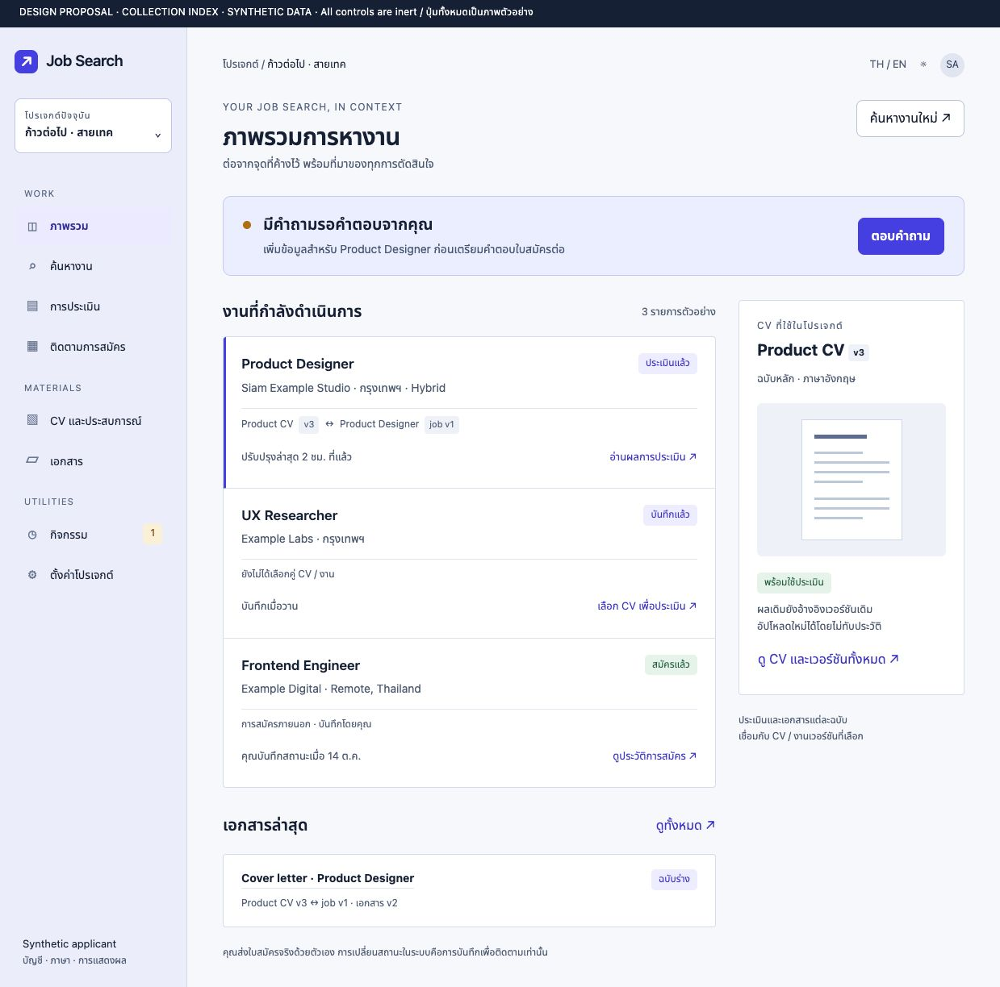
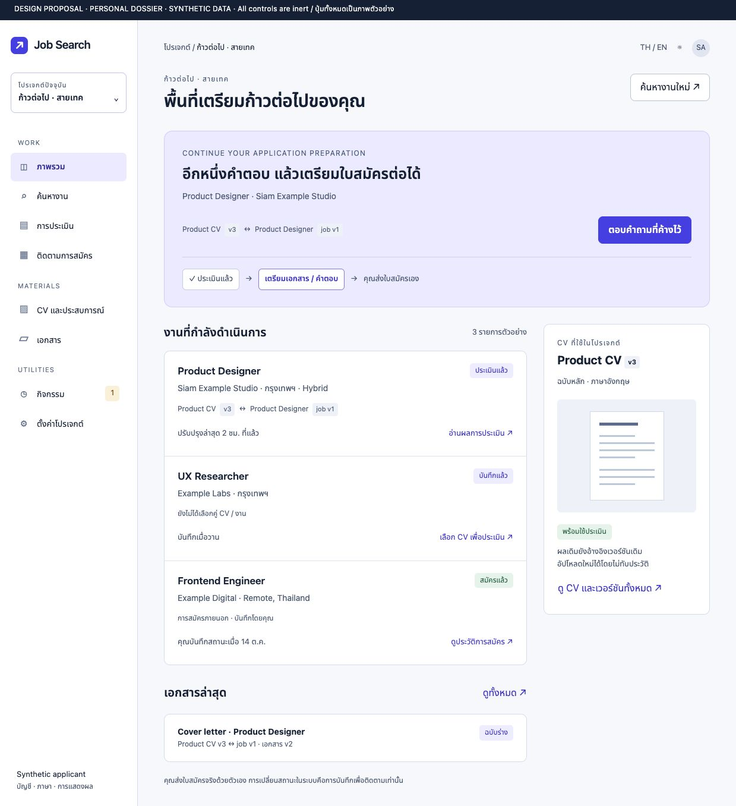
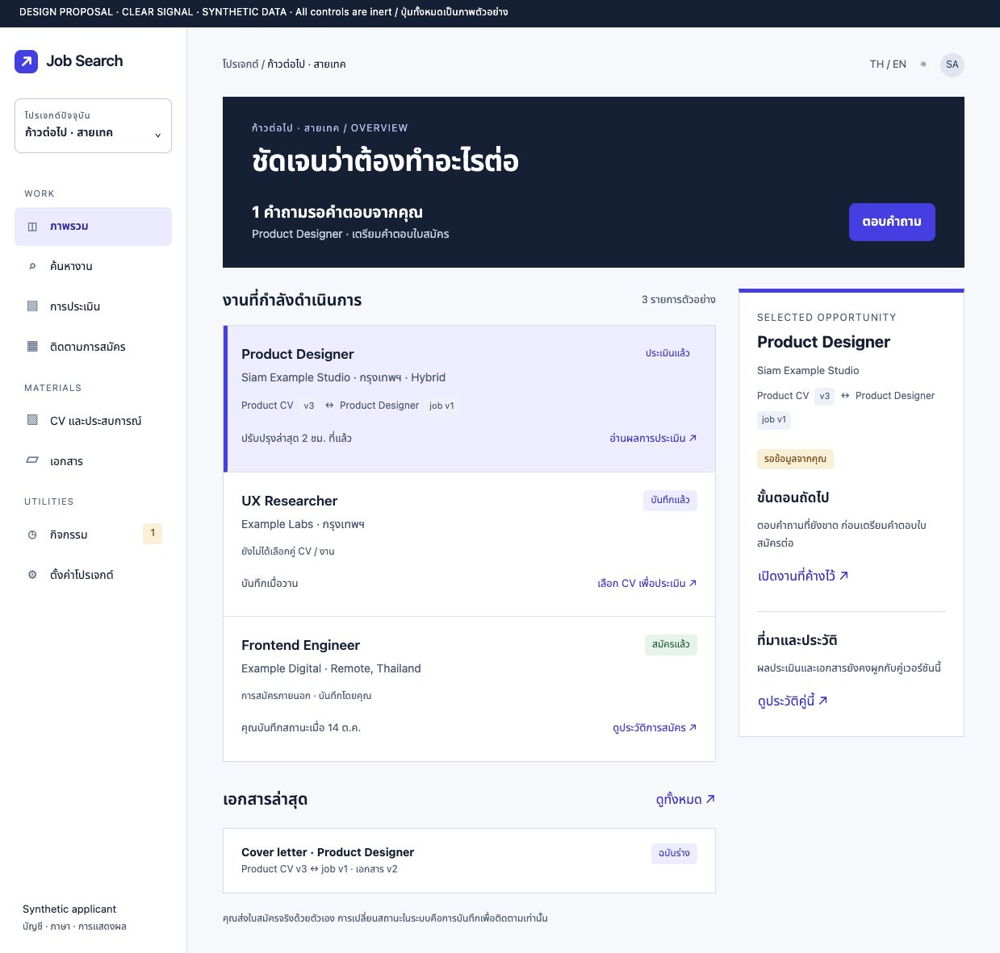

LEAD PROPOSAL
Collection Index
The next useful action stays beside its CV/job source. Compact work rows, indigo project context and one consistent source label.
Open full static concept
Choose the hierarchy and visual character that best supports daily job-search work. These are static proposals with synthetic content and inert controls. A preference does not authorize application implementation.
The next useful action stays beside its CV/job source. Compact work rows, indigo project context and one consistent source label.
Open full static concept
A personal preparation space with a generous continue panel and a concise readiness strip. The most familiar productivity option.
Open full static concept
A strong written hierarchy and continuous selection treatment connect the work list to its context. Restrained navy and indigo.
Open full static concept